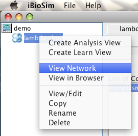
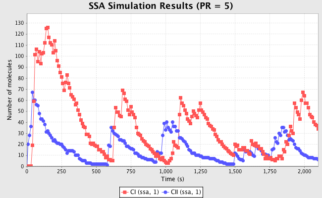
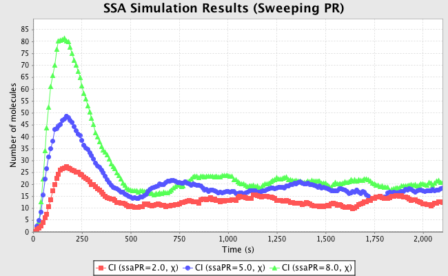
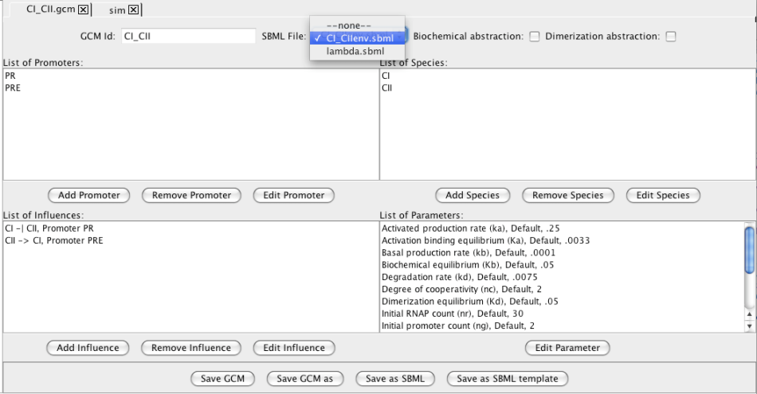
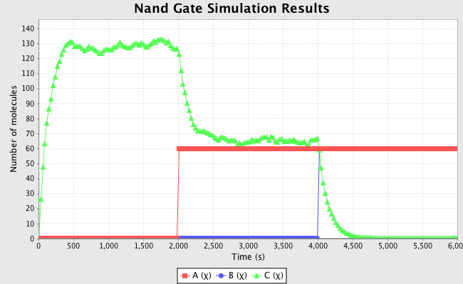
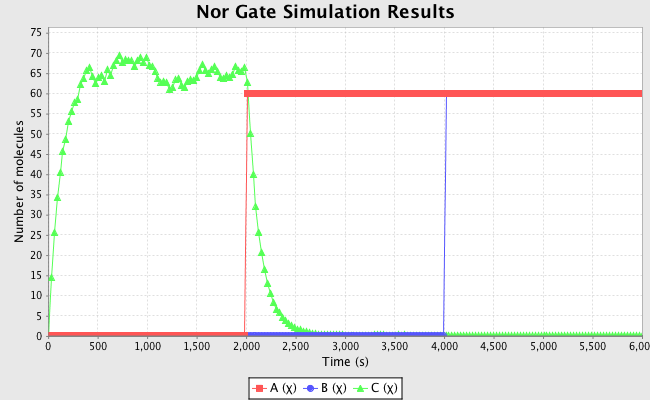

The example described in this tutorial constructs a simple model for
the cI and cII genes and the PR and PRE
promoters from the phage λ decision circuit. This example
illustrates many of the features of iBioSim.
After starting iBioSim, complete the following steps to create
an SBML model for this example:
Select File → New → Project.
Browse to desired path and create a project named demo.
Select File → New → SBML Model.
Enter lambda as the SBML model ID at which point an SBML
editor will open.
Highlight the default compartment, select Edit
Compartment, and change its ID to Cytoplasm. Also, change
the units to volume.
Select Add Species and enter CI as the ID,
The lambda repressor as the name, change the units
to mole, and set the Has Only Substance Units flag to
true. Select Add Species again and enter CI2 as the ID,
CI dimer as the name, change the units to mole, and set the
Has Only Substance Units flag to true.
Select Add Parameter and enter nd as the ID,
Number of molecules in dimer as the name, the value to be 2,
and change the units to dimensionless.
Select Definitions/Types tab, and select Add Unit
and enter per_second as the ID. Select Add to List,
select second as the kind, change the exponent to −1,
and click Add. Click Add in the Unit Definition Editor.
Repeat these steps to create a per_second_mole unit
(i.e., (second)−1(mole)−1).
Select Main Elements tab. Select Add Reaction and
enter Dimerize_CI as the ID, Reaction to dimerize CI as
the name, and change reversible to true.
Select Add Reactant and select CI as the species,
change Stoichiometry to Stoichiometry math, and set its
value to nd.
Select Add Product and select CI2 as the species.
Leave the stoichiometry as 1.
Highlight kf and select Edit Selected Parameter, change
kf to k2f, and change the units to per_second_mole.
Highlight kr and select Edit Selected Parameter, change
kr to k2r, and change the units to per_second.
Select Use Mass Action, select Add,
and select Save and Check SBML. There should be no errors.
Highlight lambda.sbml, using right mouse button, select
View Network.
Highlight lambda.sbml, using right mouse button, select
View in Browser.

Go back to the SBML editor complete the construction of the
chemical reaction network shown below:
PRE + RNAP
KPRE2 ↔
PRE_RNAP
PRE + CII + RNAP
KPRE4 ↔
PRE_CII_RNAP
PRE_RNAP
kPREb →
PRE_RNAP + nCI
PRE_CII_RNAP
kPRE →
PRE_CII_RNAP + nCI
PR + RNAP
KOR9 ↔
PR_RNAP
PR + 2 CI2
KOR10 ↔
PR_2 CI2
PR_RNAP
kPR →
PR_RNAP + nCII
2 CI
K2 ↔
CI2
CI
k1 →
()
CII
k10 →
()
Constant
Value
Constant
Value
Constant
Value
KPRE2
0.01 M−1
KPRE4
0.00161 M−2
kPREb
0.00004 sec−1
kPRE
0.015 sec−1
KOR9
0.69422 M−1
KOR10
0.06568 M−2
kPR
0.014 sec−1
K2
0.1 M−1
k1
0.0007 sec−1
k10
0.002 sec−1
n
10
Set an initial amount of 1.0 for PRE and OR, 30.0 for RNAP, and 0.0
for the rest.
This section describes how to construct a GCM model for this example:
Select File → New →
Genetic Circuit Model.
Enter CI_CII as the GCM model ID at which point a GCM
editor will open.
Select Add Promoter, enter PR as the ID, and press
Ok. Next, add the PRE promoter in the same way.
Select Add Species, enter CI as the ID, and press
Ok. Next, add the CII species in the same way.
Select Add Influence, change the input to CI, change
the output to CII, change the promoter to PR, and the
type to repression. Next, add an activation influence between
CII and CI on promoter PRE.
Select Save GCM, highlight CI_CII.gcm file, and
right click to select View Genetic Circuit.
The following instructions describe how to analyze the GCM file just
created. The SBML file can also be simulated using the following steps.
Select Save GCM, highlight CI_CII.gcm file,
right click to select Create Analysis View, and set the
analysis ID to sim.
In the newly opened window, select ODE.
Also, in this window, change the time limit to 2100.0 and print interval
to 10.0. Finally, select Save and Run at the bottom of the window.
After the simulation completes, click on the TSD Graph tab.
Double click on the graph to bring up the graph editor.
Highlight Average, if not already highlighted, select CI and CII,
change the Title to "ODE Simulation Results",
change the X-Axis Label to "Time
(seconds)", and change the Y-Axis Label to "Number of Molecules".
Press the OK button. Click on Export and enter file name of ode.jpg.
Select the simulation options tab again, select Monte
Carlo, change the number of runs to 100, and set the simulation ID
to ssa. Click on Save and Run. Click on the TSD
Graph tab.
Double click on the graph to bring up the graph editor.
Open the ssa simulation directory, and highlight run-1.
Select CI and CII, change Title to "SSA Simulation Results",
change the X-Axis Label to "Time (seconds)", and change the Y-Axis
Label to "Number of Molecules". Press the OK button. Click on
Export and enter file name of ssa-1.jpg.
Repeat these steps to generate graphs for the average (
average.jpg) and standard deviation (stddev.jpg).
Note that you can use the "Deselect All" button to
remove all items from the graph.
Click on the parameter editor tab. Highlight the PR
species, and select Edit Species. Select Custom for
the initial amount of PR and change it to 5.
Click on the simulation options tab and change the simulation ID to
ssa5.
Press the Save and Run button.
Click on the TSD Graph tab and following the steps above,
create the
following plots ssa-1_5.jpg, average_5.jpg, and
stddev_5.jpg.

Now go back to the parameter editor tab,
and change the initial amount for PR to Sweep, set
the start to 2, stop to 8, step to 3. Press the save and run
button. Click on the TSD Graph tab and double click on the graph to
open the graph editor. Notice the new simulations id's
generated for each of the run with PR of 2, PR of 5, and PR of
8. Deselect all from the current graph, and go and add the
average value of CI from each of these simulation runs.

Go back to the Parameter Editor tab and change PR back to
Original value type. Go back to the Simulation Options tab,
select Abstraction and change the simulation ID to abs.
Press Save and Run and note that the simulation time should be
substantially faster.
Go back to the TSD Graph tab and double click on the graph to bring up
the graph editor. Deselect all and add the average value of CI
from both the abs and ssa simulations.
This example illustrates how iBioSim can be used for
probabilistic analysis.
Go back to the GCM editor for CI_CII.
Select Save as SBML Template and give it the name
CI_CIIenv. Use the SBML File pulldown menu to select
CI_CIIenv.sbml to associate with this GCM. Press the
Save GCM button.

Double click on the CI_CIIenv.sbml file to open it in an
SBML editor. Select the Initial
Assignments/Rules/Constraints/Events tab, and select Add
Constraint. Add a constraint with ID CI20, constraint
geq(CI, 20), and message CI greater than 20 molecules.
Repeat these steps to add constraints for CII ≥ 30, and t ≥ 200. Be sure to press the Save SBML button when you are done.
Go back to your analysis view by clicking on the sim tab.
Remove the simulation ID and press Save and Run. Click on the
Probability Graph tab.
Double click on the graph to bring up the probability graph
editor. Change the title to Probability Results and the
Y-axis label to Percent. Click on the sim-rep file on the
left-hand side. Select CI20, CII30, and t200 to
graph them. Press Ok.
Export the graph as a jpg file by selecting the Export
button and entering the filename prob.jpg.
This section describes how a GCM can be learned from time series data.
Highlight CI_CII.gcm, right click on it, and select
Create Learn View. Give the learn view the ID learn.
At this point a Learn View will open, and you could begin
to add your experimental data. In this demo, we will just utilize our
simulation data as synthetic experimental data. To do this, click
Copy From View, and select sim/ssa. Highlight
sim/ssa/run-1.tsd, and you should see the simulation data for
CI and CII appear on the right in the data editor.
Click on the Learn tab. Here you can edit the various
learning options. For example, you can either use auto generated
levels or user generated levels for your data encoding. Select
Use User Generated Levels which will make the levels below
editable. You can also select how many bins to use. Change the
number of bins for both CI and CII to 3. At this point,
you can ask the tool to suggest levels by clicking on the Suggest
Levels button. Finally, press Save and Learn which will
bring up the GCM that has been learned from this experimental data
using Graphviz's dotty program.
This last section describes how iBioSim can be used to design
genetic logic gates.
Select File → New → Genetic Circuit
Model and give it the ID gate.
Add promoters P1 and P2, species A, B,
and C (make A and B type boundary and
C type normal), and repression influences from A to C on
P1 and B to C on P2. Save as an SBML
template named gateEnv, and associate that SBML file with this
GCM. Finally, save the GCM.
Open gateEnv.sbml in an SBML editor. Click on the Initial Assignments/Rules/Constraints/Events tab, and
select Add Event.
In the event editor, give a trigger of geq(t,2000).
Press Add Assignment, select variable A, and enter
60 in the Assignment field. Press Add for the event
assignment and Add for the event. Repeat these steps to
create an assignment to B of 60 at time 4000. Note that
you may ignore the warnings. These can be suppressed by
changing your preferences and deselecting Check for
undeclared units in SBML. Be sure to press Save SBML
when you are done.
Highlight gate.gcm, right-click, and select Create
Analysis View. Give it the ID simGate.
In the analysis view, change the options to
Monte Carlo, time limit of 6000, print interval of 30,
runs of 100.
Press Save and Run.
Select the TSD Graph tab and graph the averages of
A, B, and C. The behavior should be that of a Nand
gate.

Go back to the GCM editor for gate. Change the promoter
on the influence from B to C to P1, and save the
GCM. Go back to your analysis view and press Save and Run.
The behavior should now be that of a Nor gate.

File translated from
TEX
by
TTH,
version 3.81. On 16 Mar 2011, 18:25.